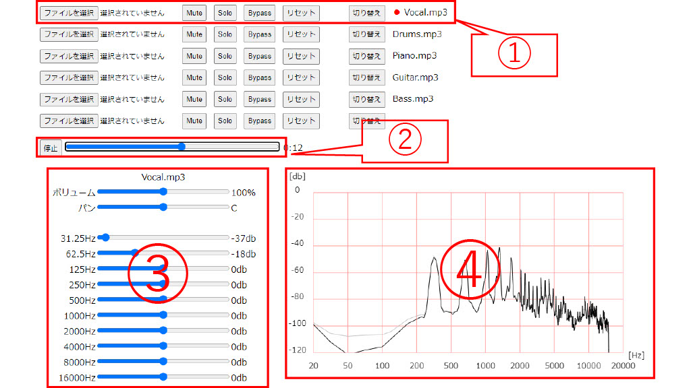

シミュレータ教材の学び方
1,エフェクターの説明のページへ行き、エフェクターの効果と変化を文字を読んで確認します。
2,シミュレータのページに行き、あらかじめ用意された音源とパラメーターのプリセットでエフェクターの効果のオン・オフを切り替えたり、パラメーターを変えるなどをして、その変化を聞いて確認します。
3,各自が持っている音源を読み込み、実際にパラメーターを調整して、エフェクターの理解を深めていきます.
シミュレータの使い方
①は音源を操作するコントローラーです。最大で6つの音源を操作することができます。
「ファイルを選択」を押すことでトラックに音声ファイルを読み込むことができます。読み込める音声ファイルの形式はmp3、oggのみとなります。
「Mute」でボタンを押したトラックの音源をミュートすることができます。Mute中は、Mute中のトラックのボリュームの操作ができなくなります。
「Solo」でボタンを押したトラックの音源以外の音源をミュートにすることができます。Solo中はSolo中、の音源以外のトラックのMuteとSoloの操作ができなくなります。
「Bypass」でボタンを押したトラックの音源のエフェクターの効果をオフにすることができます。Bypass中は、Bypass中のトラックのエフェクターのスライダーの操作ができなくなります。
「リセット」トラックのすべてのパラメーターをデフォルトの値に戻し、読み込まれたファイルをトラックから削除することができます。
「切り替え」で音源のトラックを選択し、③④にそのトラックのものが表示されます。
赤丸は、現在選択中ということを表しています。その右にファイル名が表示されます。
②は再生位置を調整するスライダーです。
左のボタンを押すと再生・停止ができます。
③はエフェクターを操作するスライダーです。上に選択中のトラックの音源のファイル名が表示されます。
ボリュームとパンは各エフェクター共通に付いています。ボリュームとパンの下には教材のエフェクターを操作するスライダーがあります。
④は音声波形やエフェクターの効果を表す図などが表示されます。これはイコライザーとコンプレッサーのみに付いています。

トップページに戻る